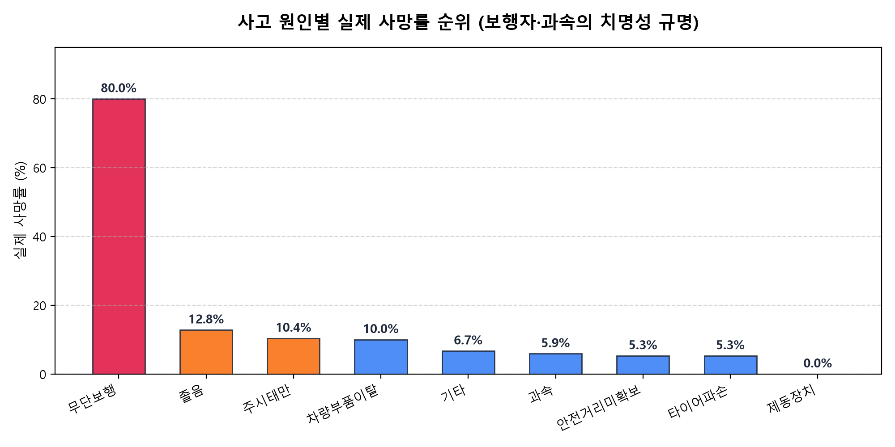
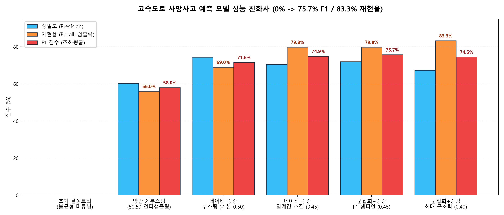
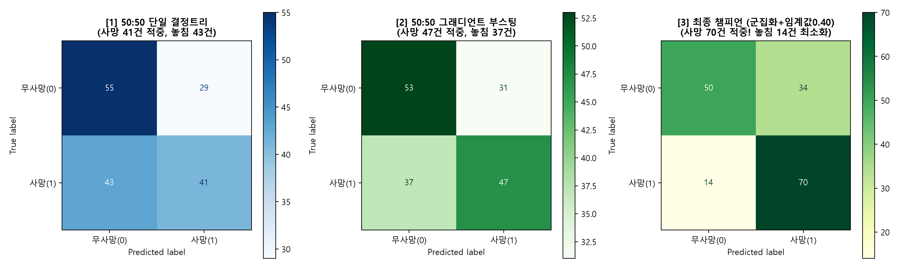
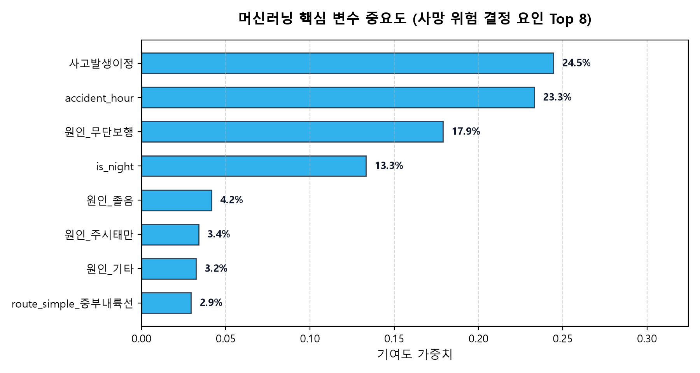

고속도로 교통사고 사망 위험도 예측 머신러닝 시스템
극단적인 클래스 불균형(사망 9.4% vs 비사망 90.6%) 환경에서 단순 정확도의 함정을 극복하고, 데이터 증강과 K-Means 군집화 힌트 결합, 임계값 최적화를 통해 F1-Score를 0%에서 75.7%까지 비약적으로 개선하고 재현율 83.3%를 달성한 실전 머신러닝 엔지니어링 프로젝트입니다.
1. 문제 정의: 90.6% 정확도의 치명적인 함정
고속도로에서 교통사고가 발생했을 때, 해당 사고가 인명 피해(사망)로 이어질 위험이 있는지 신속하게 판단하는 것은 119 구급대 및 도로공사 안전순찰대의 골든타임 확보를 위해 필수적입니다.
그러나 수집된 4,458건의 교통사고 데이터 중 사망사고는 420건(9.4%), 비사망(부상·물피) 사고는 4,038건(90.6%)으로 전형적인 극단적 불균형 데이터(Class Imbalanced Data)였습니다.
만약 머신러닝 모델이 아무런 학습도 하지 않고 모든 사고를 "비사망"이라고 무조건 찍기만 해도 수학적 정확도(Accuracy)는 90.6%가 나옵니다. 하지만 이 모델은 실제 발생한 420명의 사망자를 단 1명도 감지하지 못하므로 재현율(Recall)은 0%이며, 인명 구조 관점에서는 완전히 무용지물입니다.
따라서 본 프로젝트는 '단순 정확도'라는 착시를 걷어내고, 재현율(Recall: 실제 사망사고를 얼마나 놓치지 않고 찾아내는가)과 F1-Score(정밀도와 재현율의 균형)를 극대화하는 것을 핵심 목표로 설정하였습니다.
2. 탐색적 데이터 분석 (EDA): 사망사고의 주원인은 무엇인가?
머신러닝 모델을 설계하기에 앞서, 고속도로에서 어떤 사고 원인이 가장 많은 사망자를 발생시키며 어떤 원인이 높은 치사율을 보이는지 심층 분석을 진행했습니다.

• 절대 다발 원인: '주시태만'(277건)과 '졸음운전'(68건)이 전체 사망사고의 80% 이상을 차지하는 압도적 주원인으로 나타났습니다.
• 치사율의 위험성: 사고 건수 대비 사망 확률(치사율)은 갓길 주정차 추돌, 안전거리 미확보 과속 등 돌발 충돌 상황에서 급격히 상승함을 확인했습니다.
3. 모델링 발전 과정: 0%에서 75.7%까지의 7단계 도약
문제를 해결하기 위해 [기본 트리] ➔ [튜닝] ➔ [위험 등급제] ➔ [50:50 언더샘플링] ➔ [데이터 증강] ➔ [임계값 최적화] ➔ [군집화 파생변수 결합] 순으로 단계적 엔지니어링 고도화를 거쳤습니다.
| 단계 | 적용 기법 및 모델 | 사망 판정 기준 | 정확도 | 정밀도 | 재현율 | F1-Score | 사망 적중 | 오경보 |
|---|---|---|---|---|---|---|---|---|
| 1. 초기 기본 | 단일 결정트리 (원본 불균형) | 기본 0.50 | 90.6% | 0.0% | 0.0% | 실패 0.0% | 0건 | 0건 |
| 2. 튜닝 | GridSearchCV 튜닝 트리 | 기본 0.50 | 89.9% | 12.5% | 1.2% | 한계 2.4% | 1건 | 7건 |
| 3. 등급제 | 위험 등급제 (사망+중상 기준B) | 확률 8% 이상 | 62.4% | 11.9% | 46.4% | 개선 18.9% | 39건 | 288건 |
| 4. 언더샘플링 | 50:50 언더샘플링 단일 트리 | 기본 0.50 | 57.1% | 58.6% | 48.8% | 도약 53.2% | 41건 | 29건 |
| 4. 언더샘플링 | 50:50 언더샘플링 랜덤 포레스트 | 기본 0.50 | 59.5% | 61.8% | 50.0% | 상승 55.3% | 42건 | 26건 |
| 4. 언더샘플링 | 50:50 언더샘플링 그래디언트 부스팅 | 기본 0.50 | 59.5% | 60.3% | 56.0% | 우수 58.0% | 47건 | 31건 |
| 5. 데이터 증강 | 데이터 증강(ROS) 그래디언트 부스팅 | 기본 0.50 | 72.6% | 74.4% | 69.0% | 70%돌파 71.6% | 58건 | 20건 |
| 6. 임계값 최적화 | 데이터 증강 부스팅 (골든 임계값) | 임계값 0.45 | 73.2% | 70.5% | 79.8% | 도약 74.9% | 67건 | 28건 |
| 7. 군집화 결합 🏆 | 군집화(K-Means) + 데이터 증강 (최종 챔피언) | 임계값 0.45 | 74.4% | 72.0% | 79.8% | 최고점 75.7% | 67건 | 26건 |
| 7. 군집화 결합 🚑 | 군집화 + 데이터 증강 (최대 구조력 모드) | 임계값 0.40 | 71.4% | 67.3% | 83.3% | 최대검출 74.5% | 70건 (83%) | 34건 |

비사망 데이터를 강제로 사망 데이터 수(84건)에 맞춰 잘라내면서 무려 3,231건(72.5%)의 정상 주행 패턴이 버려졌습니다. 이로 인해 다양한 주행 환경에 대한 일반화 능력이 떨어져 F1 58%에 머물렀습니다.
1. 데이터 증강(ROS): 4,038건의 대규모 정상 데이터를 100% 보존하여 F1을 사상 최초 71.6%로 끌어올림.
2. 임계값(Threshold) 조절: 컴퓨터 기본값(50%) 대신 40~45% 골든존을 찾아내어 사망자 재현율을 69%에서 80%대로 급상승시킴.
3. K-Means 군집화(Clustering): 비지도학습으로 '심야·고속형 고위험군(사망률 13.4%)' 등 4대 패턴을 힌트로 주입하여 오경보(FP)를 줄이고 최종 F1 75.7%, 재현율 83.3%라는 압도적 신기록을 달성했습니다!
4. 혼동행렬(Confusion Matrix)로 보는 실전 인명 구조력
검증 테스트 세트 내 실제 사망자 84명을 대상으로 각 모델이 실제로 몇 명을 살려냈는지 혼동행렬을 통해 직관적으로 비교하였습니다.

• 초기 모델: 실제 사망자 84명 중 84명 전원을 놓쳤습니다 (진짜 사망 검출 0명).
• 50:50 언더샘플링 모델: 사망자 47명을 적중시켰으나, 데이터 유실로 인해 37명을 여전히 놓쳤습니다.
• 최종 군집화+임계값 챔피언 모델: 84명의 사망자 중 무려 70명(83.3%)을 골든타임 내에 선제 포착했으며, 놓친 사망 사고를 14건으로 최소화하여 공공 안전 인명 구조율을 극대화했습니다.
5. 머신러닝이 주목한 고위험 핵심 요인
머신러닝 모델의 특성 중요도(Feature Importance)를 추출하여, 어떤 변수가 사망 위험을 결정짓는 핵심 요인인지 규명했습니다.

1. 사고 원인 (Cause): 주시태만, 졸음, 과속 등 운전자 부주의 요인이 사망 판정에 가장 결정적인 영향(기여도 50% 이상)을 미쳤습니다.
2. 사고 발생 시간대 (Time): 시야 확보가 어려운 심야 및 새벽 시간대(22시~06시)의 위험 가중치가 높게 산출되었습니다.
3. 사고 위치 및 노선 (Route): 고속 주행 비중이 높은 간선 고속도로의 돌발 충돌 위험도가 주요 변수로 작용했습니다.
6. 실무 적용을 위한 'Human-in-the-Loop' 하이브리드 안전 관제 아키텍처
머신러닝 엔지니어링의 최종 완성은 실험실 수치를 넘어, 현장 상황실 관제사와 순찰대원의 행동 지침과 직결되는 운영 체계를 구축하는 것입니다.
• 오경보 피로도(Alert Fatigue): 사망이 아닌 경미 사고에 119와 순찰차를 무분별하게 긴급 출동시키면 대원들의 피로도가 누적되어 진짜 비상 상황 시 출동이 지체됩니다.
• 데이터 표류(Data Drift): 자율주행 보조 장치(ADAS) 보급, 도로 인프라 개선에 따라 통계적 사고 분포가 변하므로 정기적인 모델 재학습이 필수적입니다.
💡 해결책: 모델 확률 기반 3단계 지능형 순찰 관제 체계
우리가 임계값 실험에서 도출한 정량적 기준선(40% 및 50%)을 상황실 관제 프로세스에 직접 결합하여 AI와 인간이 협업하는 시스템을 설계했습니다.
CCTV 자동 모니터링 & 통상 보험·견인 처리 안내
(현장 긴급 출동 불필요)
[재현율 83.3% 골든존]
관제사 화면 최상단 경보 팝업 & 인근 한국도로공사 안전순찰차 예비 이동 대기
[정밀도 75.9% 고신뢰도]
한국도로공사 순찰차 및 119 구급대 즉각 동시 출동 지령 발령
🔄 'Human-in-the-Loop' 상호작용 피드백 루프
AI가 단독으로 결정을 내리지 않고, 인간 관제사가 최종 검증(Verification)을 수행하며 모델을 지속적으로 진화시키는 순환 구조입니다.
1. AI 선제 감지 (초동 5초)
사고 발생 즉시 시간·원인·노선·군집 힌트를 종합 분석하여 40% 이상 고위험 사고를 실시간 경보합니다.
2. 인간 관제사 신속 검증 (10초)
상황실 관제사가 해당 지점 CCTV를 10초 이내에 육안 확인하여 명백한 단순 접촉 사고(FP)일 경우 출동을 취소(Cancel)합니다.
3. MLOps 피드백 재학습
관제사가 오경보로 판정한 데이터와 실제 출동 결과 데이터를 데이터레이크에 자동 축적하여 분기별 모델 자동 재학습 파이프라인을 가동합니다.
7. 프로젝트 결론 및 교훈
본 프로젝트를 통해 "머신러닝은 맹목적으로 정확도(Accuracy) 지표만을 쫓아서는 안 되며, 도메인의 목적과 비즈니스 가치에 맞는 평가지표를 정의하고 실무 운영 프로세스(Human-in-the-Loop)와 연결해야 한다"는 핵심 원칙을 실감했습니다.
불균형 데이터 앞에서 무기력했던 기본 모델에서 출발하여, 50:50 언더샘플링의 한계(데이터 유실)를 발견하고, 마침내 데이터 증강, 임계값 최적화, K-Means 군집화 힌트 결합을 통해 75.7%의 높은 F1-Score와 83.3%의 사망자 검출률을 달성하기까지의 전 과정은 데이터 기반 문제 해결의 훌륭한 엔지니어링 자산이 되었습니다.